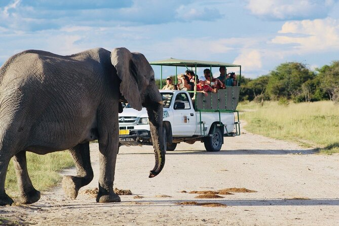
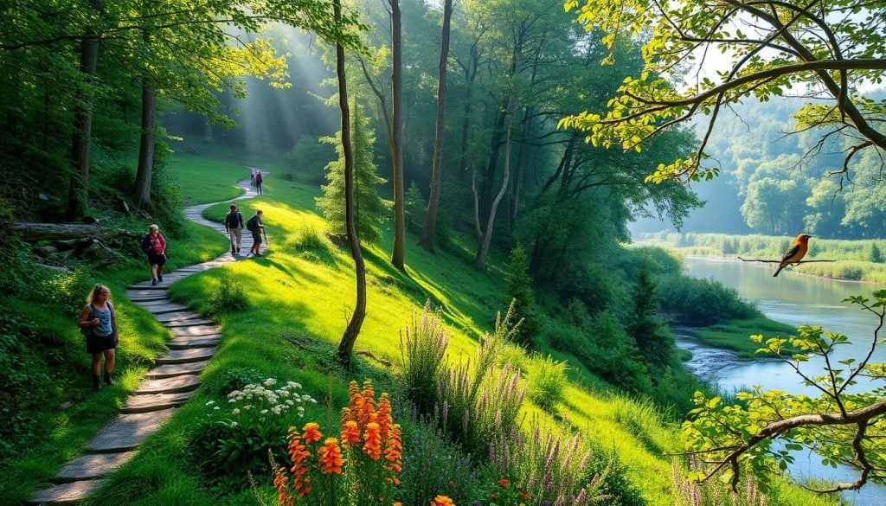

Exciting Activities at Impala Park

Guided Safari Tours: Explore the park's rich wildlife with a professional guide.

Boat Rides: Enjoy a scenic ride on Lake Victoria, spotting hippos and beautiful birds.

Nature Trails: Walk through serene landscapes filled with wildlife and plant life.

Bird Watching: Perfect for ornithologists and nature lovers alike.